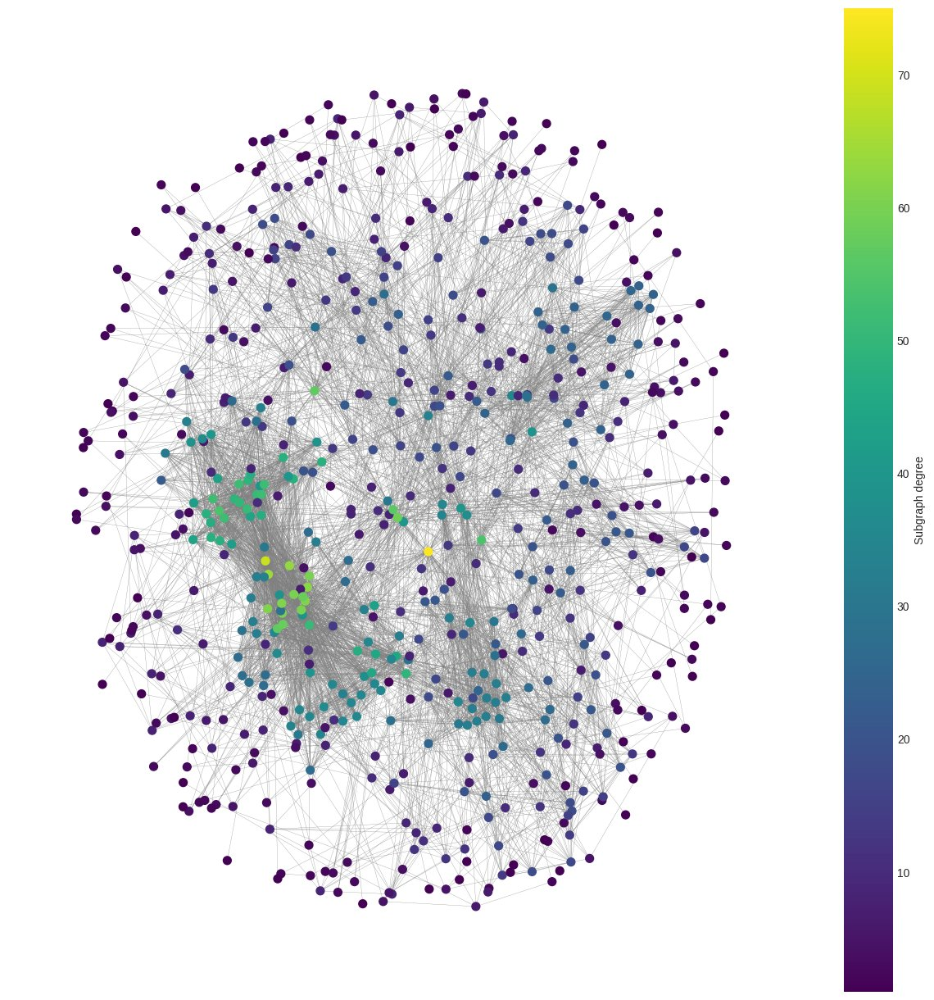

Network output · subgraph degree
01 / Network biology
Jupyter · Python
BioNetTherapy
A network-science workflow for identifying functional protein complexes and under-researched candidate targets in breast cancer.
- Input
- STRING v12 + HPA expression data
- Method
- Interactome analysis, communities, GO enrichment
- Output
- Functionally coherent candidate complexes